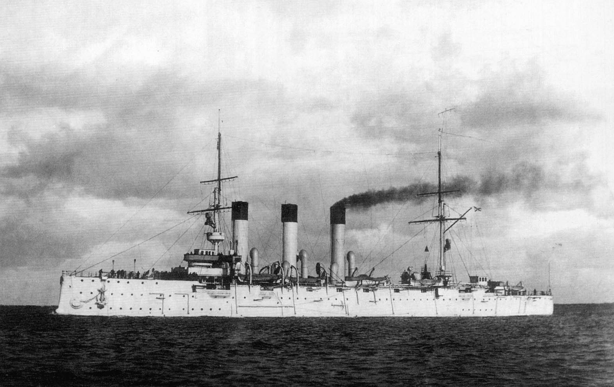
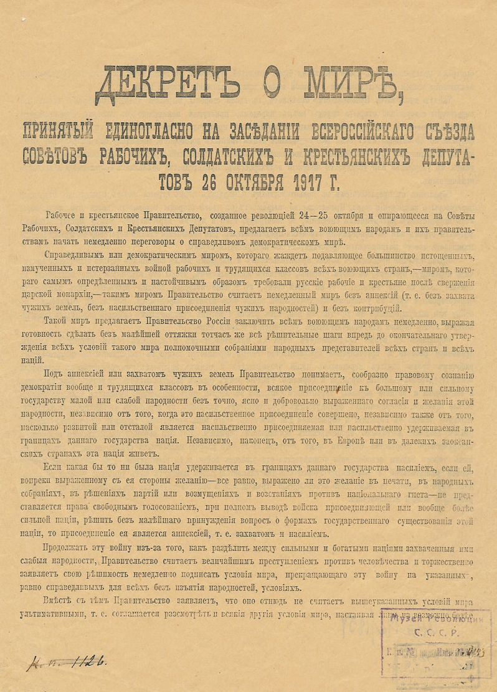
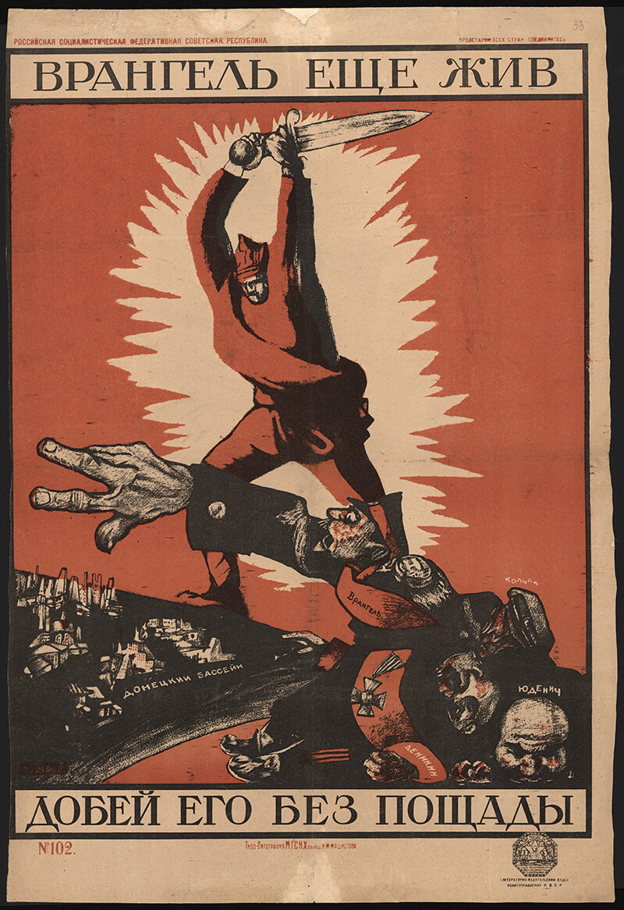

Noc Pełna Zmian
Przełomowy Moment w Piotrogrodzie
Rewolucja wcale nie przypominała wielkiej, krwawej bitwy na ulicach. W rzeczywistości był to bardzo dobrze zorganizowany zamach stanu.
- Sygnał z "Aurory": Strzał z krążownika był sygnałem do ataku na Pałac Zimowy.
- Słabość władzy: Rząd Tymczasowy nie miał już siły, by walczyć o uwagę obywateli.
- Brak oporu: Mieszkańcy rano nawet nie wiedzieli, że władza się zmieniła.

Szybkie Obietnice
Siła Prostych Słów
Lenin wiedział, że aby utrzymać władzę, musi natychmiast zrealizować obietnice. Kluczem była psychologia tłumu.
- Hasła "Ziemia, Pokój, Chleb": Najprostsze postulaty, które trafiły do serc milionów.
- Dekret o pokoju: Wzywał do zakończenia I wojny światowej.
- Dekret o ziemi: Oddanie ziemi obszarniczej chłopom.

„Wrangel jeszcze żyje. Dobij go bez litości”. Plakat, który nawołuje do bezlitosnego rozprawienia się z kontrrewolucją. Szczególnie wyeksponowane zostały postać krasnoarmiejca – bijąca siłą i determinacją – i wyciągnięta dłoń „białego” generała, którą należy odciąć.
Narodziny Imperium
Od Chaosu do Nowej Potęgi
Przejęcie władzy to był dopiero początek. Prawdziwy dramat rozegrało się w ogniu walk wewnętrznych.
- Wojna domowa: Konflikt między "Czerwonymi" a "Białymi".
- Narodziny ZSRR: W 1922 roku świat powitał nowe, ogromne państwo.
- Czerwony Terror: Powołano Czekę, by eliminować "wrogów ludu".

Świat po Wstrząsie
Globalne Echo Rewolucji
Wydarzenia w Rosji zmieniły sposób, w jaki myśleli ludzie na każdym kontynencie.
- Wpływ na świat: Inspiracja dla ruchów robotniczych na całym globie.
- Strach i Reformy: Widmo komunizmu zmusiło Zachód do reform socjalnych.
- Nowy Podział Sił: Podwaliny pod przyszłą "Zimną Wojnę".